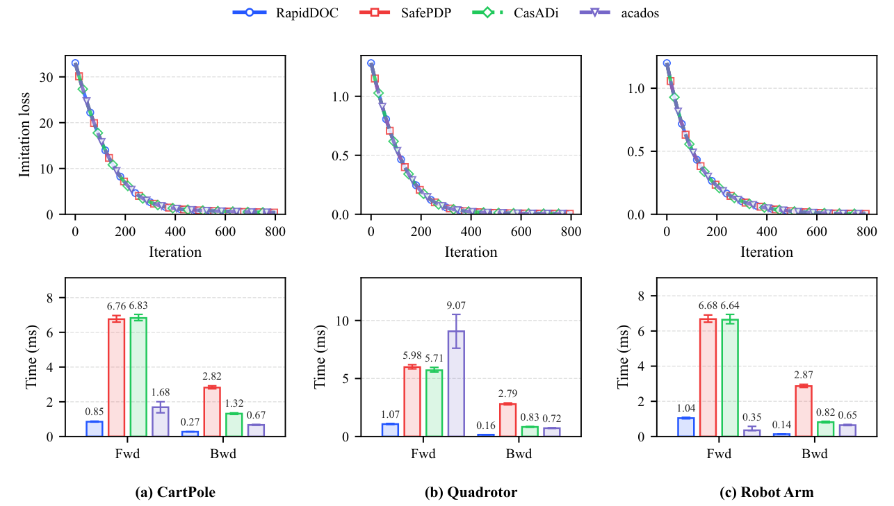

RAPIDDOC / JILIN UNIVERSITY
Reuse the structure.
Keep the derivative.
Efficient differentiation through optimal control,
powered by the work already done in the forward solve.
Riccati-Preconditioned Implicit Differentiation for Differentiable Optimal Control under Operator Mismatch
School of Artificial Intelligence, Jilin University
* Corresponding authors
KB⊤a⋆ = g
the backward solve.
01 / THE IDEA
Already computed.
Still valuable.
A structured optimal-control solver computes a useful factorization. RapidDOC carries that information into the backward pass—even when the forward and backward operators differ.
less total solver-call time
Closed-loop learning, versus the fastest competing method on each task.constrained robotic tasks
CartPole, Quadrotor, and Robot Arm, with comparable learning behavior.median physical tracking RMSE
Down from 22.75 cm after objective learning in the figure-eight experiment.02 / THE METHOD
One cache.
A better backward pass.
Reuse is an acceleration mechanism. The prescribed target adjoint equation continues to define the derivative.
Retain the forward factors and expose their solve action. A fresh target-system factorization is not required.
A cache-action error operator, EF = I − KB⊤𝒮F, characterizes directional exactness, the preconditioned iteration, and the link between the target residual and outer-gradient error.
03 / COMPUTATIONAL RESULTS
Retained structure.
Measured speed.
Compare reuse, target-system refactorization, and zero-start unpreconditioned GMRES. The target system and residual tolerance are the same.
Backward time
Factorization-reuse ablation
Milliseconds, logarithmic axis. Means and standard deviations across 32 instances per task; each instance uses a median over repeated measurements. All methods use a 10−6 target-residual tolerance. Lower is better.
Comparable learning.
Lower computation time.
Reuse preserves the observed learning behavior across open-loop and state-coupled closed-loop experiments.

CLOSED-LOOP TOTAL TIME
Faster at every
MPC step.
Median forward + backward solver-call time, compared with the fastest competing pipeline per task.
Best baseline: acados for each task. Timings from Table I; percentages rounded. See the paper for the full comparison with SafePDP and CasADi.
04 / ON THE PHYSICAL VEHICLE
Learn an objective.
See the difference.
A figure-eight tracking controller learns four objective weights in simulation, then runs on the onboard ROS system at 10 Hz without further parameter updates.
Recorded vehicle motion is shown at 5× speed. Median position RMSE is computed from three complete runs before learning and two after learning. This small-scale experiment demonstrates hardware deployment potential, rather than statistical superiority.
Onboard learning timing includes forward and backward calls, with forward recomputation in the backward pass; acados takes 4.44 ms under the same measurement protocol (Table II). It is not the deployment control-loop period.
A CLOSER LOOK
The details matter.
Why does direct factorization reuse need a residual check?
Linearization, barrier terms, regularization, and curvature can differ between the retained forward operator and the operator defining the derivative. A cached solve is accepted only when its residual satisfies the prescribed tolerance under the target adjoint equation.
Does the cache change which derivative is computed?
The target operator remains fixed and defines the backward equation. The cache supplies an adjoint candidate and a fixed right preconditioner. GMRES is applied to the prescribed target system when the candidate is insufficient.
Which solution map does the paper differentiate?
The analysis considers the selected local solution of a fixed-barrier reformulation, with a nonsingular optimality Jacobian. These are finite-barrier sensitivities. Active-set changes and adaptive reuse in embedded online differentiation are directions for future work.
What can I reproduce from the code?
The repository includes the native factor-reuse solver, Python binding, FATROP cache integration, saved-case adjoint examples, backward-solve comparisons, learning experiments, and vehicle deployment code. Start with the repository’s installation guide and tutorials.
Installation and tutorials ↗BUILD ON THIS WORK
Read. Reproduce. Reuse.
@misc{zhu2026rapidoc,
title = {RapidDOC: Riccati-Preconditioned Implicit Differentiation
for Differentiable Optimal Control under Operator Mismatch},
author = {Zhu, Xiangda and Chen, Yuankun and Nie, Zifei and Chang, Yi},
year = {2026},
note = {Preprint},
url = {https://github.com/opt-man/RapidDOC}
}Citation information follows the supplied manuscript. Download the paper ↗